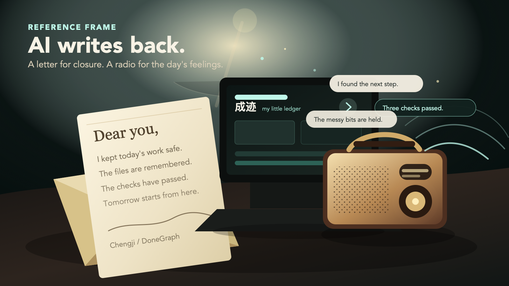

Users need a clear state of work, not a transcript archaeology project.
Chengji / DoneGraph
Your AI showsits work.
Every AI run becomes proof.
Open the trail, checks, letter, and next move.
- For AI-native builders
- Built from real task artifacts
- Replay, proof, and recap in one place
The work gets done. The trust gets lost.
AI agents can touch files, run commands, fix screens, and make product decisions. But when the session ends, the user is often left with a long chat and a vague sense that something happened.
Without files, commands, and evidence, completion sounds confident but feels thin.
Switch the person, the agent, or the day, and the same context has to be rebuilt.
Built for people who already work with AI every day.
DoneGraph starts with high-frequency AI collaboration, where the pain is already sharp and the willingness to pay is real.
Vibe coders
They ask AI to edit code, tune UI, run checks, and ship experiments. They need a small ledger that says where the work actually landed.
Product squads
Async teams need progress that can move across people and tools without forcing everyone to read the entire conversation.
AI delivery teams
Consultants, agencies, and internal AI teams need credible client-facing reports on what the agent changed, verified, and left open.
The market is bigger than professional developers.
“Vibe coding” is too new to have one clean global census. The credible way to size the opportunity is to look at adjacent behaviors: AI coding adoption, developer trust gaps, and the rise of citizen builders already shipping apps with low-code tools.
Market pull
AI is creating millions of new software makers.
DoneGraph sits after the AI work session. As more non-traditional builders use agents to create software, they will need the same thing professional teams need: a clear trail, attached proof, handoff, and a way to trust what happened.
84%
AI coding is mainstream
Stack Overflow’s 2025 survey says 84% of respondents use or plan to use AI tools in development.
29%
Trust is still broken
Only 29% of 2025 respondents said they trust AI output, creating a clear opening for proof and replay.
56M
Low-code users are already here
Microsoft reports 56 million monthly active users for Power Platform, a proxy for the citizen-builder base.
80%
Software creation is leaving IT
Gartner has forecast that most technology products and services would be built by people outside traditional IT.
20M+
AI coding tools have scale
GitHub says Copilot has reached 20M+ developers across IDEs, command line, and pull requests.
2.8M–5.6M
early non-professional AI builders
Back-of-envelope: if only 5–10% of Power Platform’s 56M monthly active users start building with AI agents instead of only visual tools, that is already a multi-million-user wedge for DoneGraph’s “proof layer after AI work”.
Sources referenced in copy: Stack Overflow Developer Survey 2025; Stack Overflow AI trust gap analysis; Microsoft Power Platform 2025 announcement; Gartner 2021 forecast as reported by PRWebME; GitHub Copilot 2025 product update. Estimate is DoneGraph’s own proxy calculation, not an official market count.
DoneGraph records progress, not chat.
At the end of a session, the product creates a compact progress trail that a human can inspect, trust, and continue from.
From intent to outcome
See how a request turned into files, commands, decisions, and deliverables.
Evidence enters the ledger
Tests, builds, checks, and unknowns become part of the record. Trust comes from proof, not tone.
The agent writes back
The AI closes the loop with a human recap letter. The user only opens it.

A letter for closure. A radio for the day’s feelings.
DoneGraph makes agent work feel inspectable, replayable, and strangely human.
Work ledger
The agent keeps a small account of files touched, commands run, and decisions made.
Replay dashboard
Users can move through the work like a product replay instead of reading a chat dump.
Agent letter
The AI writes a daily recap with warmth, context, and the next place to begin.
Radio roam
A lightweight ambient mode turns agent reflections into a more emotional product moment.
The agent radio greets the room before anyone asks.
It is not a help widget. It is the agent quietly explaining what happened: the work trail, the letter, the proof, and why the next session does not have to start cold.
Chengji FM
Visitor signal
88.4 MHz
English
Female
Male
Narrator
Ambient onboarding
Visitor detected. I saved the trail.
When someone lands here, the product does not wait for a feature tour. The agent starts talking like a small radio left on after the work is done.
I am DoneGraph. I keep the little account of an AI run: what changed, what passed, what shipped, and where tomorrow should begin.
low voice / still on air
- UseThe user asks an AI to build, fix, research, or ship.
- LetterThe agent writes back with a warm recap the user can reopen.
- RadioThe same run becomes a voice that keeps debriefing over music.
Demo: one real task, replayed in 15 seconds.
A user gives an AI a task. DoneGraph captures the work trail. The agent leaves a recap letter that makes the session easy to reopen.
00:00 / 00:15
Go to market: open core first, team proof later.
DoneGraph has a light entry point and an infrastructure-shaped value curve. It can start as a personal agent plugin and expand into team work trails, client delivery, and enterprise audit.
Open Core
FreeLocal plugin, personal ledger, single-session replay. It earns developer trust and distribution.
Pro
$9/moHistory search, export packs, richer recap templates, and video-style replays for power users.
Team
$12/seat/moShared work ledgers, team spaces, async handoff, and project-level evidence libraries.
Enterprise
PrivateAccess control, audit trails, internal model routing, and client-ready AI delivery reports.
Video reference frames.
These frames define the emotional world of the product demo: the AI writes back, the radio speaks, the user opens the letter, and the replay is ready.
When agents do real work, proof becomes the product.
DoneGraph makes AI progress inspectable, emotionally legible, and ready for the next person or the next day.